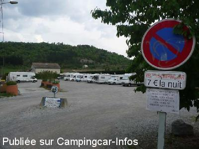
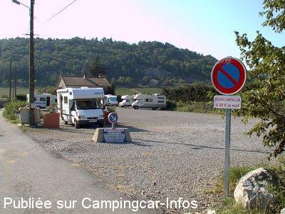

ASN = Aire de services avec stationnement nuit possible de :
VALLON PONT D'ARC
(N° 667)
Accès/adresse :
Chemin du Chastelas
07150 VALLON PONT D'ARC
07150 VALLON PONT D'ARC
Latitude : (Nord) 44.4052° Décimaux ou 44° 24′ 18′′
Longitude : (Est) 4.39702° Décimaux ou 4° 23′ 49′′
Tarif : 2015
Stationnement : 6 €
Services : 2 €
Type de borne : FLOT BLEU
Services :


Tous commerces
Autres informations :
Ouvert toute l'année
Tél mairie : +33(0)475 880 206

Le 26/04/2009 par ESVMLB

Le 30/04/2007 par lou palma 83
de
Steve
le 07/11/2015 :
De passage pendant été 2015. Beaucoup de monde mais on trouve facilement de la place si on n'arrive pas trop tard. La gare routière à côté permet de prendre des navettes gratuites vers le Pont d'Arc et ses plages ou vers la réplique de la grotte Chauvet.
De passage pendant été 2015. Beaucoup de monde mais on trouve facilement de la place si on n'arrive pas trop tard. La gare routière à côté permet de prendre des navettes gratuites vers le Pont d'Arc et ses plages ou vers la réplique de la grotte Chauvet.
de
Jean-Pierre
le 14/05/2015 :
Passé le 3 mai 2015. Aire poussièreuse mais calme, l'utilisation su système de paiement est compliquée.
Passé le 3 mai 2015. Aire poussièreuse mais calme, l'utilisation su système de paiement est compliquée.
de
David
le 13/11/2013 :
Belle aire, calme (en novembre...) bien située.
Belle aire, calme (en novembre...) bien située.
de
Advieu
le 25/08/2013 :
§ Aire très fréquentée. La municipalité a réduit le parking pour la mise en place d'une "gare routière". Cela à l'avantage de prendre le bus pour aller direct sur les gorges. L'inconvénient, vu le trafic des CC, ça devient dur de se placer. En juillet/Août, arriver avant midi ! Tarif : 6€ pour 24h et 2€ services
§ Aire très fréquentée. La municipalité a réduit le parking pour la mise en place d'une "gare routière". Cela à l'avantage de prendre le bus pour aller direct sur les gorges. L'inconvénient, vu le trafic des CC, ça devient dur de se placer. En juillet/Août, arriver avant midi ! Tarif : 6€ pour 24h et 2€ services
de
Kriss
le 02/08/2013 :
Aire très bien située. Attention ne la programmez pas sur votre GPS, il vous ferait rentrer par le centre ville ce qui est impossible. Contentez-vous de suivre le panneau à l'entrée de Pont D'Arc, ainsi vous contournerez la ville. Outre le coût du stationnement, tous les autres services sont payants.
Aire très bien située. Attention ne la programmez pas sur votre GPS, il vous ferait rentrer par le centre ville ce qui est impossible. Contentez-vous de suivre le panneau à l'entrée de Pont D'Arc, ainsi vous contournerez la ville. Outre le coût du stationnement, tous les autres services sont payants.
de
gerald
le 20/04/2013 :
Je suis passé à Pâques sur cette aire de Vallon Pont d''Arc, l''aire n''est plus artisanale mais c''est une borne Flot Bleu MAXI (pas sûr de la marque) qui donne des tickets pour la nuit, qui permet de prendre de l''eau. Par contre, la vidange reste gratuite. Nous avons payé Euro 6.-
Je suis passé à Pâques sur cette aire de Vallon Pont d''Arc, l''aire n''est plus artisanale mais c''est une borne Flot Bleu MAXI (pas sûr de la marque) qui donne des tickets pour la nuit, qui permet de prendre de l''eau. Par contre, la vidange reste gratuite. Nous avons payé Euro 6.-
de
Serre Jean Jacques
le 03/06/2012 :
7 € certes par rapport au tarif des campings de la région...c'est donné...
7 € certes par rapport au tarif des campings de la région...c'est donné...
de
joel
le 15/08/2011 :
Merci à la municipalite pour cette aire,dommage qu elle soit surchargée,nous n avons pas pu passer la nuit donc direction les campings .Autrement tres jolie ville te bonne descente en canoe à faire
Merci à la municipalite pour cette aire,dommage qu elle soit surchargée,nous n avons pas pu passer la nuit donc direction les campings .Autrement tres jolie ville te bonne descente en canoe à faire
de
tifou7
le 11/08/2011 :
Nous y avons passé une nuit en juillet, meme si l'aire était bien remplie c'est un bon point de chute pour visiter la région
trés proche du centre, la commune met en plus gratuitement une navette pour rejoindre l'ardèche au lieu dit PONT D'ARC ou il y a une plage pour la baignade...(service en été, le minibus vient jusqu'au parking à côté de l'aire)
Pratique pour ceux qui sont avec des enfants ou qui ne veulent pas rejoindre ce site en vélo (à 4 kms de l'aire)
Nous y avons passé une nuit en juillet, meme si l'aire était bien remplie c'est un bon point de chute pour visiter la région
trés proche du centre, la commune met en plus gratuitement une navette pour rejoindre l'ardèche au lieu dit PONT D'ARC ou il y a une plage pour la baignade...(service en été, le minibus vient jusqu'au parking à côté de l'aire)
Pratique pour ceux qui sont avec des enfants ou qui ne veulent pas rejoindre ce site en vélo (à 4 kms de l'aire)
de
gigiflo
le 12/06/2011 :
L'aire est agréable, les services sont bien accessibles, le marché est le jeudi, la ville est superbe. C'est aussi un bon départ pour les balades pédestres et vélo ; ne pas manquer de voire "le pont d'arc". Merci à la municipalité de Vallon Pont d'Arc pour cette aire très agréable.
L'aire est agréable, les services sont bien accessibles, le marché est le jeudi, la ville est superbe. C'est aussi un bon départ pour les balades pédestres et vélo ; ne pas manquer de voire "le pont d'arc". Merci à la municipalité de Vallon Pont d'Arc pour cette aire très agréable.
de
jean pierre
le 04/04/2011 :
De passage début avril, très grande aire de stationnement et de plus en centre ville, merci Vallon pont d'arc !!!
De passage début avril, très grande aire de stationnement et de plus en centre ville, merci Vallon pont d'arc !!!
de
D & D du 41
le 28/06/2010 :
L'aire par elle même est quelconque, en plein soleil, 3 pauvres lauriers roses entourés d'herbes folles encore plus hautes. Bien sûr, l'aire est proche des commerces mais il s'agit surtout de commerces de souvenirs et le village n'a rien d'intéressant. C'est dommage, car les gorges sont superbes. Pourquoi pas une prochaine aire sur les bords de la rivière ?
7€ la nuit, je trouve qu'il serait plus judicieux de mettre une borne de services et un stationnement moins cher, les CC n'ont pas nécessairement besoin de faire le plein d'eau ou autre. §
L'aire par elle même est quelconque, en plein soleil, 3 pauvres lauriers roses entourés d'herbes folles encore plus hautes. Bien sûr, l'aire est proche des commerces mais il s'agit surtout de commerces de souvenirs et le village n'a rien d'intéressant. C'est dommage, car les gorges sont superbes. Pourquoi pas une prochaine aire sur les bords de la rivière ?
7€ la nuit, je trouve qu'il serait plus judicieux de mettre une borne de services et un stationnement moins cher, les CC n'ont pas nécessairement besoin de faire le plein d'eau ou autre. §